Group 1
表示・デザイン
GrADSの基本操作を変えずに、図の見た目、色、文字、ベクトル・流線、複数パネル、画像出力を少し扱いやすくします。X連載では（1）（5）（6）（7）（8）に相当し、Web版ではexportもここにまとめました。
X連載 （1）
Modern theme：昔のGrADSの書き方を大きく変えずに、表示を現代化
アスペクト比、緯度経度線、地図線、標準カラーマップ、2次元表示など、図の第一印象に関わる設定をまとめて扱います。
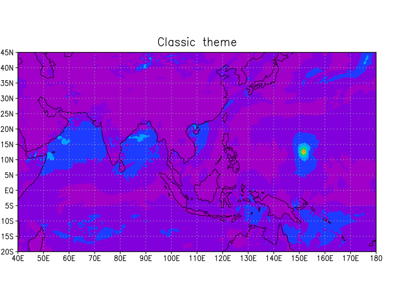
Classic theme Modern theme
Modern theme'sdfopen file.nc'
'set theme modern'
'd mag(ugrd_10mabovegr,vgrd_10mabovegr)'
'draw title Modern theme'
'gxprint figure.png'
CAMO版では set theme modern によって、従来のGrADSに比べて地図表示を少し軽くし、緯度経度図のaspect factorを1.2から1.0へ変更しています。modern themeでは cividis を標準カラーマップとして使用し、起動時の2次元grid表示も従来のcontourではなく shade2 を標準としています。X・Y軸の標準目盛文字も0.11から0.15へ大きくしています。
従来の表示をなくしたわけではなく、set theme classic と set gxout contour で以前の見た目へ戻せます。基本的なGrADSスクリプトはそのままに、必要なところだけCAMO版の設定を足す、という使い方を想定しています。
X連載 （5）
カラーマップを名前で指定
RGB値を一つずつ定義する代わりに、よく使われるカラーマップを名前で選択できます。反転も簡単です。
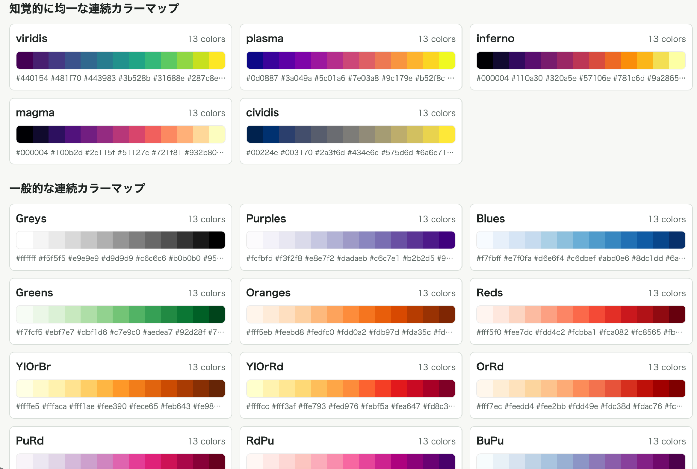
CAMO/GrADS カラーマップ・カラーバー生成ページ'set rgbmap RdBu'
'set rgbmap RdBu_r'
'set rgbmap RdBu reverse'
CAMO版ではMatplotlibの組み込みカラーマップから13色にサンプリングしたRGB tableを用意しています。viridis、plasma、inferno、magma、cividis のほか、sequential、diverging、cyclic系のカラーマップを利用できます。
NAME_r または reverse で色順を反転できます。さらにWeb上のカラーマップ生成ページでは、色を見ながらGrADS用の設定コードを作れるようにしています。
X連載 （6）
システムフォントをファミリ名で指定
GrADSの文字だけが妙に昔っぽく見える問題を、かなり簡単に減らせます。
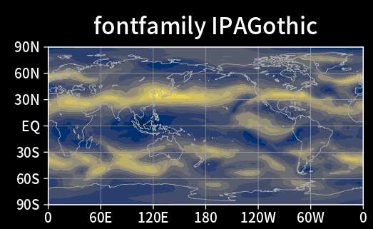
set fontfamily IPAexGothic の例'set fontfamily IPAexGothic'
'set fontfamily Helvetica'
'set fontfamily DejaVu Sans'
set fontfamily はCairo/fontconfigを通して、OSにインストール済みのフォントファミリを選びます。CAMO版自身にフォントファイルを同梱しているわけではありません。
論文、ポスター、スライドなどで他の作図ソフトウェアとフォントを揃えたい場合に有効です。従来のGrADSの操作体系は保ったまま、文字だけを自然に現代の環境へ寄せられます。
X連載 （7）
陰影図の上でも見やすい vector2 / stream2
背景色によってベクトルや流線が見えなくなる問題を、二重描画で緩和します。
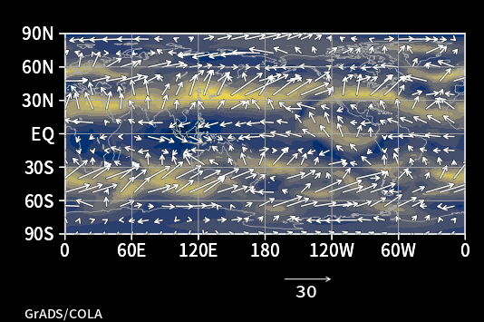
set gxout vector2
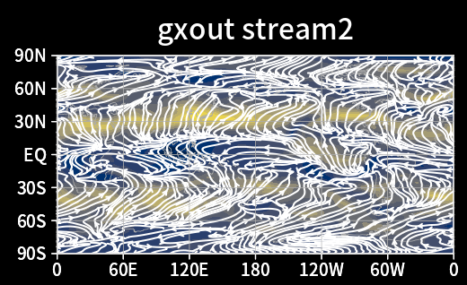
set gxout stream2
'set gxout vector2'
'd u;v'
'set gxout stream2'
'd u;v'
vector2 と stream2 は、上流GrADSのvector/streamアルゴリズム自体は変えず、先に半透明の背景色系アウトラインを描いてから本来の線を重ねます。陰影色が大きく変化する場でも、線が背景へ埋もれにくくなります。
従来の vector と stream はそのまま残っています。したがって、CAMO版の描画を強制するのではなく、必要な図だけ明示的に使えます。
X連載 （8）
複数パネルを簡単に配置
2×2、2×3などの図を作るとき、毎回set pareaの座標を人力で計算する必要を減らします。
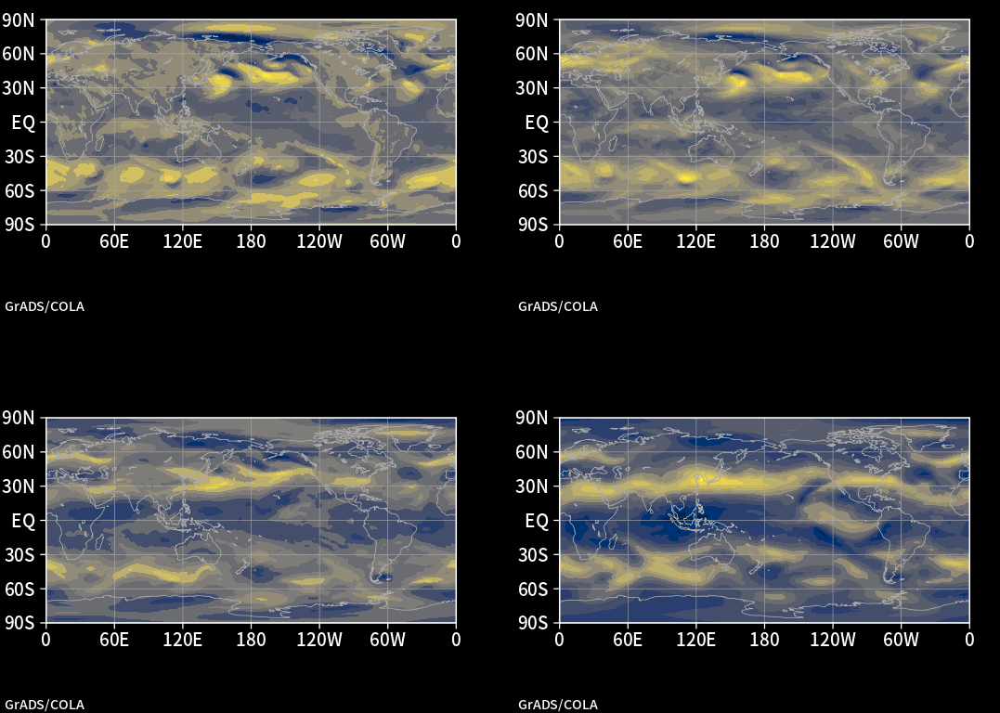
2 × 2 panel example'set panels 2 2'
'set panel 1'
'd u'
'set panel 2'
'd v'
'set panel 3'
'd mag(u,v)'
'set panel 4'
'd hgt'
'set panels off'
set panels ROWS COLS でページを分割し、set panel N で描画先を切り替えます。月別比較、実験間比較、合成図など、気象・気候研究では非常に頻繁に出てくる作業です。
もちろん従来どおり set parea や set vpage を直接指定することもできます。単純なpanel layoutだけ、短く書けるようにした機能です。
Web追加
PNG・透過PNG・PDF・SVGへの簡潔な出力
Web、Word、PowerPoint、印刷など、最終用途に合わせた出力を短いコマンドで指定できます。
'export figure.png'
'export figure.png transparent'
'export figure.png scale 2'
'export figure.png width 1600'
'export figure.pdf'
'export figure.svg'
export はCAMO版で追加したcompactなhardcopy指定です。通常PNGのほか、背景を透明にしたPNG、拡大PNG、幅・高さを指定した出力、PDF、SVGなどを扱えます。
通常のGrADSでは gxprint がcanonicalな出力コマンドであり、CAMO版でもそれは変わりません。export は同じhardcopy系の処理を、日常用途で短く指定するための別名・拡張入口として位置づけています。
Group 2
地理座標での描画
ページ上のx, yではなく、lon/latや距離で注記を描けるようにした機能です。解析領域、地点、ベクトル、距離半径を、研究で使う座標のまま書けます。X連載では（2）（3）（4）（11）です。
X連載 （2）
四角を緯度・経度指定で描画：georec / georecf
解析領域、指数の定義域、モデル領域などを、ページ座標ではなくlon/latそのもので指定できます。
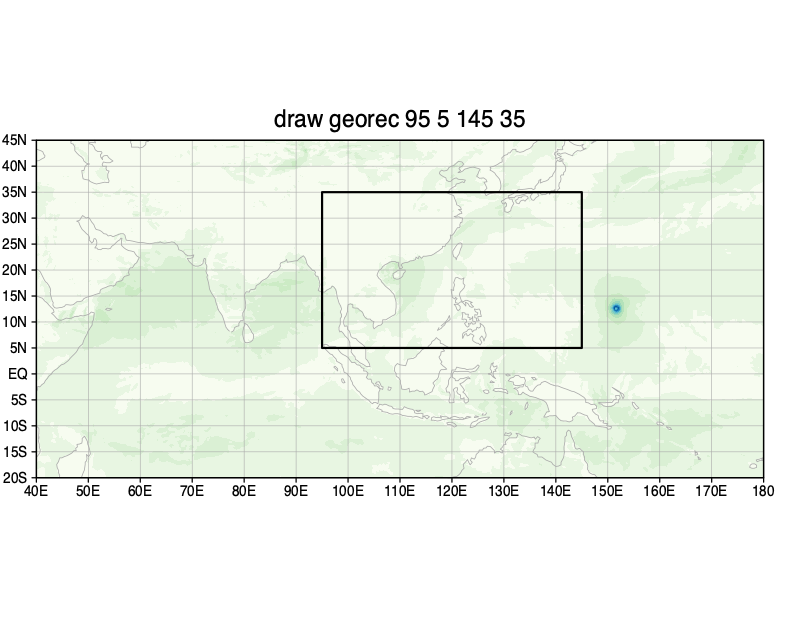
draw georec 95 5 145 35

draw georecf 105 10 135 32
'set line 1 1 8'
'draw georec 95 5 145 35'
'draw georecf 105 10 135 32'
draw georec LON1 LAT1 LON2 LAT2 で地理座標上の矩形を描き、georecf では内部を塗りつぶします。従来の rec / recf はページ上のx, yを指定しますが、CAMO版では地図上の値をそのまま書けます。
矩形の辺は単純に投影後の四隅だけを直線で結ぶのではなく、GrADSのmap-polygon interpolationを利用してから投影します。このため非線形な地図投影でも、地理的な領域として自然な境界を描きやすくしています。
X連載 （3）
円を緯度・経度指定で描画：geocirc / geocircf
観測点、台風中心、解析中心などへ、地理座標を直接使って円を置けます。

draw geocirc 130 30'set line 1 1 8'
'draw geocirc 130 30'
'draw geocircf 130 30'
距離指定をしない geocirc は、地図上の指定地点へ固定ページサイズの円を置くためのannotationです。geocircf はその塗りつぶし版です。
「130°E, 30°Nに印を付けたい」という操作を、そのまま130, 30と書けることが目的です。ページ座標へ一度変換する小さな手間をなくしています。
X連載 （4）
ベクトルを緯度・経度指定で描画：geovec
任意地点に、東西・南北成分で与えたベクトルを地図投影に応じて描けます。
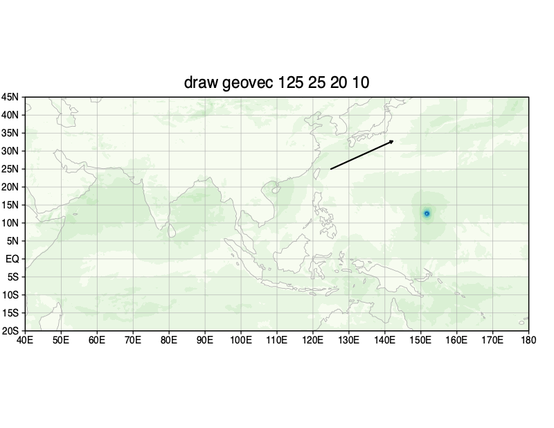
draw geovec 125 25 20 10'set line 1 1 8'
'set arrscl 1.2 20'
'draw geovec 125 25 20 10'
draw geovec LON LAT U V ではUを東向き、Vを北向きの成分として扱います。現在の投影の局所的な向きを考慮して、紙面上の矢印方向へ変換します。
ベクトル長は通常のGrADSと同様に set arrscl で管理します。非正角投影でも位置ごとに勝手に大きさが変わらないよう、方向変換と長さの扱いを分けています。
X連載 （11）
緯度・経度＋距離で測地線円を描画
中心座標と半径kmを指定し、球面上で等距離となる円を地図へ描きます。
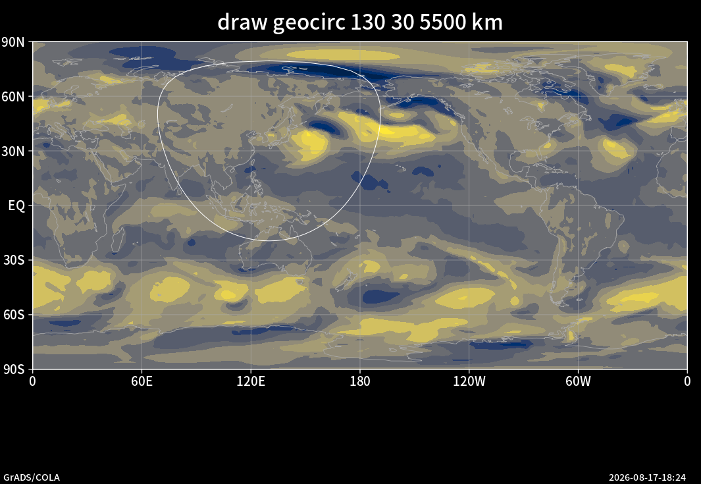
draw geocirc 130 30 5500 km
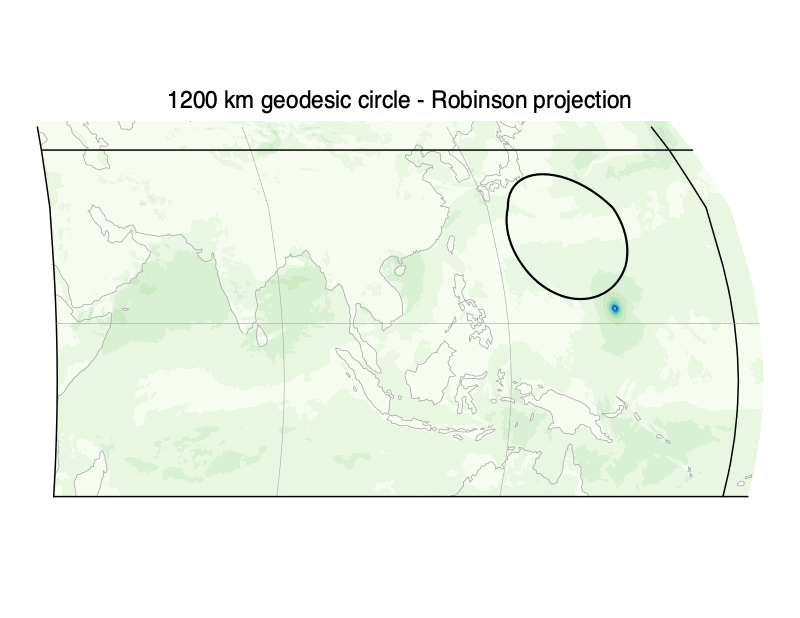
Robinson projection上の1200 km測地線円
'draw geocirc 130 30 500 km'
'draw geocirc 130 30 5500 km'
'draw geocircf 130 30 1200 km'
km を付けると、固定ページサイズのannotationではなく、球面Earth上で測地線距離を計算した円になります。実装では72 segmentの円周を球面上で作り、その後に現在の地図投影へ変換します。
Robinson投影などでは紙面上で完全な円に見えませんが、それが正しい挙動です。台風中心から500 km、観測点から1200 kmなど、「地球上の距離」を示したい解析で利用できます。
Group 3
解析・出力・互換機能
GrADS内の計算結果を他の環境へ渡すtxtwrite、OpenGrADS系scriptを生かすre()、CAMO独自機能を確認するhelpをまとめました。作図以外の日常処理を補うグループです。
X連載 （9）
GrADSで計算した値をCSV・テキストへ直接出力：txtwrite
GrADSで前処理し、Python/R/Excel/gnuplotなどへ渡すための軽量な橋渡しです。
'txtwrite -csv -header out.csv tmp'
'txtwrite -csv -header -undef -9999 out.csv tmp'
txtwrite [-csv] [-header] [-undef VALUE] FILE EXPR で、1次元・2次元grid expressionの結果を依存ライブラリなしでテキスト出力できます。標準は空白区切り、-csv でCSVになります。
経度・緯度が変化する2次元場なら lon,lat,value、時系列なら time,value のように、変化する次元に合わせた座標列を出します。station dataと高次元expressionは、この最初のtext writerでは対象外です。
GrADSでデータを開き、平均・合成・差分などを計算して、必要な結果だけ別環境へ渡すという使い方を想定しています。
X連載 （10）
OpenGrADSで使われてきた re() の主要用途に対応
昔の解析スクリプトをなるべく生かしながら、通常のlon/lat gridを再格子化できます。
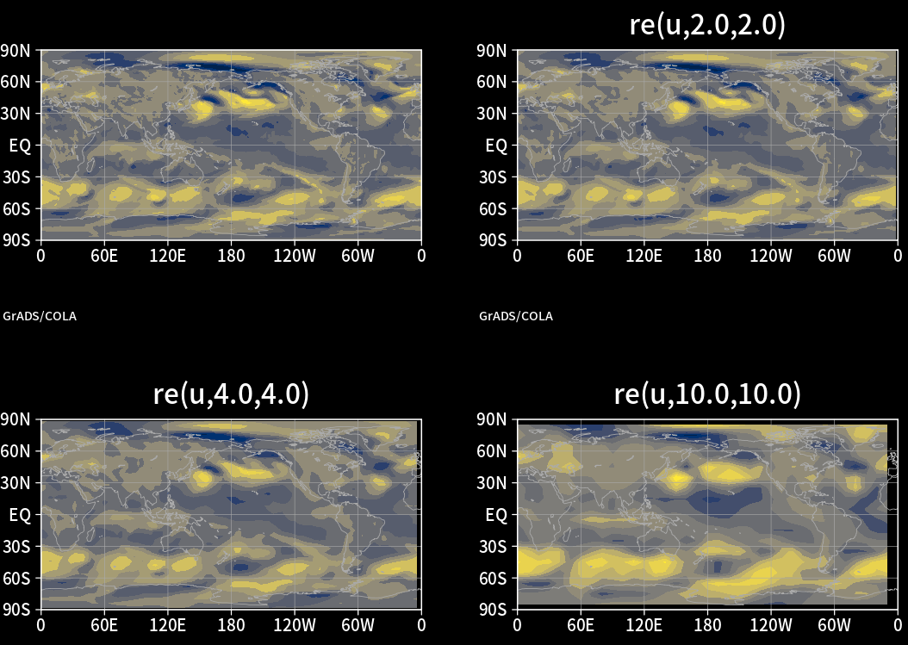
re(u,2.0,2.0) / re(u,4.0,4.0) / re(u,10.0,10.0)'d re(u,2.0,2.0)'
'd re(u,4.0,4.0)'
'd re(u,10.0,10.0)'
CAMO版の re() は、GrADS 2.2.3の既存 lterp() interpolation coreを利用したlimited compatibility wrapperです。一般的なOpenGrADS風の引数からlinear lon/latのdestination gridを作ります。
bl/bilin、bs/bessel、ba/aave、ma,FRACTION に対応しています。methodを省略した場合には、粗い格子への変換ではarea average、細かい格子ではBessel interpolationを使うOpenGrADSの慣例に合わせています。
一方、vote interpolation vt やGaussian grid指定は、数値的な検証を別に行う必要があるため、現時点では明示的に非対応です。「何となく動く」より、非対応なら止める方を選んでいます。
Web追加
CAMO独自機能をGrADS内から確認：help camo
追加コマンドを全部暗記する必要はありません。promptから主要なCAMO機能を引けるようにしています。
'help camo'
'help color'
'help gxout'
'help text'
'help geo'
'help export'
CAMO版はinteractive help summaryを拡張し、theme、palette、panel、地理座標描画、font、exportなどの入口を確認できるようにしています。q config ではCAMO identifierも確認できます。
一般的なGrADS/OpenGrADSのコマンド、関数、utilitiesは、別途Webリファレンスにまとめています。CAMO独自機能と通常のGrADS機能を分けて参照できる構成です。
Group 4
動作環境・互換性
Linux/macOSの現在のcompiler・libraryでbuildし、昔からのGrADS scriptをなるべくそのまま残すための部分です。画面にはほぼ写りませんが、CAMO版の中心的な目的の一つです。X連載では（12）に相当します。
X連載 （12）
現在のLinux・macOS環境でGrADS 2.2.3を使い続ける
見た目には出ない部分ですが、CAMO版のかなり大きな仕事は、現在のcompiler・library・OSへの追随です。
camo26.2ではAlmaLinux 8/9/10、Fedora 44、Debian 13、Ubuntu 24.04/26.04の7環境でbuild、install、12/12 batch suite、clean runtime起動を確認。Linuxはx86_64/amd64、EL10はx86-64-v3です。macOSはMacPortsライブラリでsource buildとbatch確認済み、正式なPort導入工程は未確認です。
新しいGCCで問題になる古いC宣言、HDF5のmodern API、Debian/Ubuntu系のserial HDF5 layout、current g2c/GRIB2、UDUNITS2 include path、libpng16、shapelibなど、古いscientific softwareを現在のdistributionでbuildすると次々に出てくる互換性問題をpatchしています。
通常のGrADSスクリプトも利用できます。
Web追加
system library・packaging・互換性修正
配布物の中身を現代のLinux/macOSらしい構成へ寄せ、privateな古いsupplibsへの依存を減らしています。
RPM系ではsystem library linkageとFHS-styleの配置を採用し、Cairo、GD、NetCDF、HDF4/HDF5、GRIB2、GeoTIFF、shapefile、X11などのsystem development packagesを使う構成へ移しています。実際に有効になった機能はbuild logと grads -blc "q config" で確認できます。
RPMではDAP/GADAPを無効化。Debian/Ubuntuではgridded OPeNDAPが有効、GADAPは無効です。HDF4はUbuntu 24.04を含む全7 Linux環境で有効です。ただし独立HDF4/HDF5入力や遠隔OPeNDAP接続の確認とは別です。構成は grads -blc "q config" と検証一覧で確認してください。
Web追加
既存スクリプトとの互換性を優先
新コマンドは必要なときだけ使い、通常のGrADSコードは通常のGrADSコードとして残す設計です。
'sdfopen file.nc'
'set lon 100 160'
'set lat 10 50'
'd tmp'
'gxprint figure.png'
上のような従来のGrADS scriptをCAMO独自syntaxへ書き換える必要はありません。必要であれば、そこへ set theme modern、set rgbmap、set fontfamily、set gxout vector2 などを追加します。
georecとrec、vector2とvector、exportとgxprintは、それぞれ別のコマンドとして利用できます。